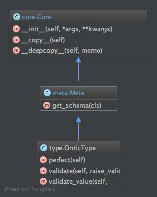

The fundamental Ontic base data types for creation of derived child classes.
Contents
The ontic_type module provides the OnticType and a set of functions to handle the creation and validation of OnticType instances.
Construction of Ontic data types as a class definition:
>>> class MyType(OnticType):
... ONTIC_SCHEMA = SchemaType({
... 'some_property': {
... 'type': 'int',
... 'required': True,
... },
... 'other_property': {
... 'type': 'str',
... 'required': False,
... 'enum': {'Enum1', 'Enum2', 'Enum3'}
... },
... })
>>> my_object = MyType()
>>> my_object.some_property = 7
>>> # or
>>> my_object['some_property'] = 7
>>> validate_object(my_object)
[]
It is also possible to create OnticType derived types dynamically with the use of the create_ontic_type() function.
>>> some_type = create_ontic_type('SomeType', {'prop':{'type':'int'}})
>>> my_object = some_type(prop=3)
>>> my_object
{'prop': 3}
>>> my_object.prop
3
Create an Ontic type to generate objects with a given schema.
create_ontic_type function creates an OnticType with a given name and schema definition. The schema definition can be a dict instance that is a valid schema definition or a ontic.schema_type.SchemaType. This makes the following forms valid:
MyType = create_ontic_type('MyType', {'prop':{'type':'int'}})
schema_instance = SchemaType(prop={'type':'int'})
MyType = create_ontic_type('MyType', schema_instance)
| Parameters: |
|
|---|---|
| Returns: | A class whose base is OnticType. |
| Return type: | ClassType |
| Raises ValueError: | |
String name required. Dict or ontic.schema_type.SchemaType schema required. |
|
Function to ensure complete attribute settings for a given object.
Perfecting an object instance will strip out any properties not defined in the corresponding object type. If there are any missing properties in the object, those properties will be added and set to the default value or None, if no default has been set.
For the collection types (dict, list, set), the default values are deep copied.
| Parameters: | the_object (ontic.ontic_type.OnticType) – Ab object instance that is to be perfected. |
|---|---|
| Return type: | None |
Function that will validate if an object meets the schema requirements.
| Parameters: |
|
|---|---|
| Returns: | If no validation errors are found, then None is returned. If validation fails, then a list of the errors is returned if the raise_validation_exception is set to True. |
| Return type: | list<str>, None |
| Raises: |
|
Validate a specific value of a given OnticType instance.
| Parameters: |
|
|---|---|
| Returns: | If no validation errors are found, then None is returned. If validation fails, then a list of the errors is returned if the raise_validation_exception is set to True. |
| Return type: | list<str>, None |
| Raises: |
|